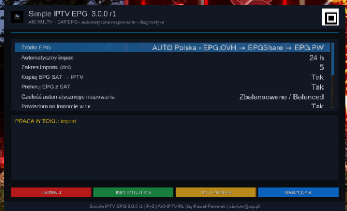

Witam na mojej stronie Paweł Pawełek
EPG dla IPTV • pełny audyt i przebudowa
Simple IPTV EPG 3.0.0 r1
Gruntownie przebudowane narzędzie dla Enigma2 do pobierania, mapowania i importowania EPG dla kanałów IPTV. Nowa wersja analizuje playlisty, dopasowuje kanały do XMLTV, może wykorzystywać EPG satelitarne jako źródło pomocnicze i importuje wydarzenia bezpośrednio do systemowego EPG Enigma2.

Najważniejsze informacje
Wersja: 3.0.0 r1
Pakiet: enigma2-plugin-extensions-simpleiptvepg_3.0.0-r1_all.ipk
Rozmiar: 46.2 KB
Wydanie: 15.08.2026
Platforma: Enigma2 • kod uporządkowany pod Python 2 / Python 3
Pakiet deklaruje: Depends: enigma2
Autor: Paweł Pawełek / AIO IPTV PL
SHA-256: 3cfec80899c0ea4e5e2a5eabad5d3304bc7f661a90d5fa96ed7da489564ead82
Co zmienia 3.0.0 r1?
- pełny audyt architektury, pobierania EPG, mapowania, XMLTV, cache i integracji Enigma2
- całkowicie nowy interfejs w spójnej stylistyce projektów AIO
- nowy AutoMapper z priorytetem dla
tvg-idi trzema poziomami dokładności - przebudowana współpraca SAT → IPTV oraz system cache zależny od rzeczywistego źródła
- pełniejszy parser i walidacja XMLTV, test źródła, scheduler i diagnostyka
- operacje Enigma2 przekazywane do głównego wątku GUI
- build r1 naprawia kolejność warstw
zPositionna ekranach
🔍 Pełny audyt techniczny
Wersja 3.0.0 powstała po analizie architektury kodu, pobierania EPG, mapowania kanałów, parsera XMLTV, cache, integracji z eEPGCache, wykorzystania EPG satelitarnego, pracy w tle, aktualizacji, diagnostyki oraz interfejsu. Celem była nie tylko zmiana wyglądu, lecz zbudowanie stabilniejszej bazy pod dalszy rozwój.
🎨 Nowy interfejs
Główne funkcje są dostępne bez przeszukiwania wielu ekranów. Interfejs został ujednolicony z rodziną AIO i zachowuje czytelny podział na źródło, import, test i narzędzia.
- 🔴 Czerwony — wyjście
- 🟢 Zielony — import EPG
- 🟡 Żółty — test źródła
- 🔵 Niebieski / MENU — narzędzia
- ℹ️ INFO — informacje
- ✅ OK — zapis ustawień
📺 Do czego służy Simple IPTV EPG?
- pobiera i analizuje dane XMLTV
- analizuje dostępne kanały IPTV
- automatycznie dopasowuje kanały IPTV do danych EPG
- wykorzystuje
tvg-id,epg_idixmltv_id, jeśli są dostępne - dopasowuje kanały również po nazwach
- importuje wydarzenia do systemowego EPG Enigma2
- może wykorzystać EPG kanałów satelitarnych jako źródło pomocnicze
- automatycznie odnawia EPG i przechowuje cache mapowania
- udostępnia narzędzia diagnostyczne do analizy problemów z importem
🧠 Nowy AutoMapper
Najpierw wyszukiwany jest dokładny identyfikator kanału: tvg-id, epg_id lub xmltv_id. Dopiero gdy identyfikatora nie ma, mechanizm przechodzi do dopasowania nazw.
Najbardziej restrykcyjne dopasowanie. Minimalizuje ryzyko błędnego przypisania.
Tryb domyślny — kompromis między dokładnością a skutecznością.
Bardziej elastyczne dopasowanie nazw dla trudniejszych list IPTV.
Poprawiony fuzzy matching nie wybiera kanału „na siłę”, gdy dwa wyniki są niemal identyczne. W takiej sytuacji lepiej pozostawić kanał bez EPG niż przypisać program niewłaściwej stacji.
📡 EPG SAT → IPTV
Wtyczka może preferować dane EPG dostępne z kanału satelitarnego dla odpowiadającego mu kanału IPTV. Obecność danych SAT nie blokuje jednak budowania mapowania XMLTV. Gdy EPG satelitarne zniknie, kanał może wrócić do XMLTV bez przebudowy całego systemu mapowania.
🔄 Nowy system cache
Cache mapowania uwzględnia teraz rzeczywiście użyte źródło XMLTV, dokładny adres, aktualny zestaw kanałów IPTV oraz poziom AutoMappera. Przejście na zapasowe źródło nie powinno więc automatycznie używać starego mapowania przygotowanego dla innego dostawcy EPG.
🧩 Modułowa architektura
Kod został podzielony na warstwy odpowiedzialne za GUI, AutoMapper, źródła EPG, parser XMLTV, cache i stan, worker, diagnostykę, kompatybilność oraz główną logikę. Ułatwia to rozwój i diagnozowanie usterek.
⚡ Stabilniejsza praca
Pobieranie XMLTV, parsowanie, analiza kanałów i budowanie mapowania może odbywać się w tle. Operacje bezpośrednio związane z eEPGCache, eServiceCenter, importEvents() i usługami Enigma2 są przekazywane do głównego wątku GUI.
🗂 Lepszy parser XMLTV
- obsługa XML namespace
- różne formaty czasu i strefy czasowe
- kategorie oraz opisy wydarzeń
- pliki GZIP i duże dokumenty XMLTV
- pełna walidacja root
<tv>, kanałów, wydarzeń, poprawności XML i kompletności strumienia
Uszkodzony lub niedokończony dokument nie powinien być uznawany za prawidłowe źródło EPG.
🧪 Test źródła przed importem
Żółty przycisk umożliwia sprawdzenie źródła bez wykonywania pełnego importu. Test weryfikuje odpowiedź serwera, obecność XMLTV, liczbę kanałów, występowanie wydarzeń i integralność danych.
🛠 Narzędzia administracyjne
- pełny import wraz z przebudową mapowania
- samo przebudowanie mapowania
- diagnostyka i podgląd logu
- sprawdzenie aktualizacji oraz aktualizacja wtyczki
- czyszczenie cache mapowania
- czyszczenie plików tymczasowych
🕒 Automatyczne odnawianie EPG
Scheduler może wykonywać import co 6, 12, 24 lub 48 godzin. Można również ustawić opóźnienie pierwszego importu po uruchomieniu Enigma2. Dodano zabezpieczenie przed zapętlaniem ciężkich importów, gdy źródło jest chwilowo niedostępne.
📊 Diagnostyka
Wtyczka zapisuje informacje o ostatnim uruchomieniu i poprawnym imporcie, użytym źródle, liczbie kanałów IPTV/SAT/XMLTV, liczbie zaimportowanych wydarzeń, błędach eEPGCache, cache mapowania i stanie workera.
/tmp/simpleiptvepg.log⚠️ Koniec z fałszywym „Import zakończony”
Jeżeli operacja technicznie kończy się bez wyjątku, ale do systemowego EPG trafiło 0 wydarzeń, wersja 3.0.0 oznacza import jako nieudany. Użytkownik otrzymuje informację o problemie zamiast pozornego sukcesu.
🔐 Pobieranie i aktualizacje
Usunięto rozwiązania wyłączające weryfikację certyfikatów TLS. Mechanizm pobierania źródeł i aktualizacji nie powinien obniżać bezpieczeństwa połączenia tylko po to, aby wymusić transfer.
🐍 Python 2 / Python 3
Kod został uporządkowany pod kątem starszych i nowszych środowisk Enigma2: ograniczono konstrukcje utrudniające zgodność i wydzielono warstwę kompatybilności. Faktyczna zgodność nadal zależy od konkretnego image i dostępnych komponentów Enigma2.
🔧 Co poprawia build r1?
3.0.0 r1 zawiera dodatkową poprawkę kolejności warstw zPosition. W pierwszym buildzie 3.0.0 część elementów dynamicznych mogła zostać przykryta tłem, przez co widoczne były panele i kolorowe przyciski, ale brakowało tekstu. W buildzie r1 kolejność warstw została poprawiona na ekranach wtyczki.
🖼️ Podgląd 3.0.0 r1
📌 Najważniejsze zmiany w Simple IPTV EPG 3.0.0 r1
- kompletny audyt poprzedniej wersji i całkowicie nowy interfejs
- nowy AutoMapper z priorytetem dla identyfikatorów i trzema poziomami dokładności
- wykrywanie niejednoznacznych dopasowań i poprawiony fuzzy matching
- przebudowany cache zależny od faktycznego źródła XMLTV
- lepszy fallback źródeł oraz SAT → IPTV
- stabilniejsza integracja z
eEPGCachei głównym wątkiem GUI - rozbudowany parser XMLTV, namespace, strefy czasowe i pełna walidacja
- test źródła, scheduler, diagnostyka, logi i ręczna przebudowa mapowania
- brak wyłączania weryfikacji TLS
- import 0 wydarzeń jest traktowany jako błąd
- r1: poprawka warstw
zPositionna ekranach
📥 Instalacja
Możesz użyć instalatora online albo pobrać IPK i wgrać go do /tmp.
wget -qO - https://raw.githubusercontent.com/OliOli2013/SimpleIPTV_EPG/main/installer.sh | /bin/shopkg install /tmp/enigma2-plugin-extensions-simpleiptvepg_3.0.0-r1_all.ipkPo instalacji zalecany jest restart GUI Enigma2.
Simple IPTV EPG 3.0.0 r1
To praktycznie nowa baza wtyczki — nastawiona nie tylko na automatyczny import EPG, lecz przede wszystkim na poprawne mapowanie, możliwość szybkiej diagnostyki i stabilniejszą pracę na różnych odbiornikach Enigma2.
Paweł Pawełek • AIO IPTV PL • aio-iptv@wp.pl